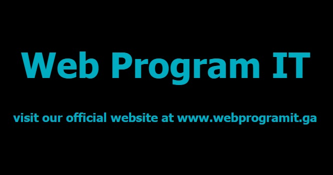
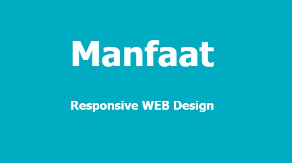

Left
WebProgramIT
Middle
Pengenalan Layout Responsif untuk halaman web - Layout adalah penataan elemen halaman yang umumnya ada pada perancangan suatu system informasi maupun web. Layout responsif adalah salah satu layout yang sering diterapkan pada halaman website. Layout responsive memungkinkan halaman web menyesuaikan diri dengan ukuran perangkat yang mengaksesnya, berikut ini adalah tampilan web yang sama ketika dibuka atau diakses menggunakan perangkat yang berbeda:.

Pentingkah layout responsif?Semakin hari semakin banyak orang yang menggunakan perangkat mobile untuk browsing, seperti menggunakan smartphone dan tablet untuk setiap tugas atau pekerjaannya sehari-hari. Pekerjaan yang dulunya hanya dilakukan melalui personal komputer(desktop & laptop) sekarang hampir semua sudah bisa digunakan juga melalui perangkat mobile.

Right
Responsive Web Design adalah sebuah teknik yang digunakan untuk membuat layout website menyesuaikan ukuran lebar layar dari perangkat yang digunakan
Artikel Responsive Lain